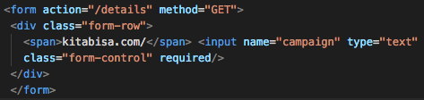
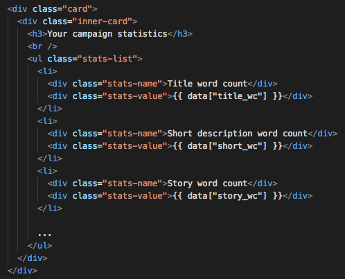

Build a Data-Driven Web App with Flask
Background
- There are lots of cool codes and blog posts... but no way to try them unless you run the code yourself
- The need to create a prototype/minimum viable product (MVP) that even non-technical users can use
$ git clone ...
$ jupyter notebook
From this:
To this:
Why Python?
- Powerful data analytics libraries (pandas, numpy, scikit-learn...)
- ... and web development frameworks (Flask, Django...)
- Great community support
More time to focus on getting insights from your data and putting it out there
... but why Flask?
Flask is simple and flexible:
However, it's always a good idea to assess what your application needs.
Feel free to follow along!
http://pyconid-demo.herokuapp.com
https://github.com/galuhsahid/pyconid2017
Based on "Estimating the Collected Funding Amount of the Social Project Campaigns in a Crowdfunding Platform"
Galuh Tunggadewi Sahid, Ivana Putri, Intan Sari Septiana, Rahmad Mahendra. ICACSIS 2017
Let's get started!
-
Input data
From user? External data? -
Prediction
Done using the model we have built -
Output
Display the result of our calculation and other stats
Tip #1: Think from the perspective of the users. What do they need?
/resources
Your model and other files needed to process your data
/static
Where the stylesheet, JS files, and images go
/templates
Where the HTML files go
Input: data.py
Get data from campaign page and Facebook
Prediction: predict.py
Predict the amount of campaign donation based on scraped campaign data and Facebook data
Output: graph.py
Display a graph that explains how fundraisers can increase their predicted collected donation
Combining everything together: routes!
Getting user input
templates/index.html
routes.py
Data Collection
Data from the campaign page
Web scraping using Beautiful Soup 4
Engagement data from Facebook
routes.py
Tip #2: Keep in mind the type of your data
Prediction
Libraries
We are using scikit-learn but depending on your app, you can use plenty others (LibSVM, Gensim, Tensor Flow...)
Make your model persistent
Pickle, joblib*
routes.py
predict.py
Data Viz
Libraries
How do we generate a plot dynamically and display it in a page?
routes.py
graph.py
Recap ‐ what do we have so far?
from get_data()
data =
{
"title_wc": title_wc,
"short_wc": short_wc,
"story_wc": story_wc,
...
"prediction": prediction,
...
"fb_reaction_count": fb_reaction_count,
"fb_comment_count": fb_comment_count,
"fb_share_count": fb_share_count,
"collected_amt": collected_amt
}
Recap ‐ what do we have so far?
from display_fb_shares()
fb_shares =
{
"plot_url": plot_url,
"target_bin": target_bin,
"target_bin_avg": target_bin_avg
}
Display it to the user
routes.py
Display it to the user
Most of the time, everything is pretty straightforward
templates/details.html
templates/details.html
Display it to the user
Conditional
templates/details.html
static/style.css

Display it to the user
Conditional
Display it to the user
Custom filters
util/filters.py
templates/details.html
Flask is capable of much more
- Flask Admin
- Flask Login
- Flask Mail
- ... and so on!